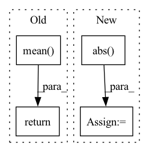

Pattern ID :37721
Before Change
def cross_entropy_loss(*, logits, labels):
logits = jnp.reshape(logits, [logits.shape[0], 1])
labels = jnp.reshape(labels, [labels.shape[0], 1])
return optax.sigmoid_binary_cross_entropy(logits=logits, labels=labels).mean()
def create_train_state(hidden_sizes, output_size, input_shape, rng,
learning_rate):After Change
loss_label = optax.sigmoid_binary_cross_entropy(
logits=jnp.reshape(logits[:, 0], [-1, 1]),
labels=jnp.reshape(labels[:, 0], [-1, 1])).mean()
loss_bias = jnp.mean(jnp.abs( jax.nn.sigmoid(logits[:, 1]) - labels[:, 1]) )
return loss_label + loss_bias
In pattern: SUPERPATTERN
Frequency: 3
Non-data size: 4
Instances Fragment ID: 108332593
Project Name: google/uncertainty-baselines
Commit Name: 5472649ead874aec7e1ccb4d1fdddef4c823e769
Time: 2022-08-14
Author: no-reply@google.com
File Name: experimental/shoshin/training.py
M Class Name: AnonimousClass
N Class Name: AnonimousClass
M Method Name: cross_entropy_loss(0)
N Method Name: cross_entropy_loss(0)
M Parent Class:
N Parent Class:
M File Name: experimental/shoshin/training.py
N File Name: experimental/shoshin/training.py
M Start Line: 51
M End Line: 51
N Start Line: 49
N End Line: 55
Before Change
super(DCLoss, self).__init__()
def forward(self, input, target):
return (torch.abs(torch.mean(target-input))**2)/(torch.mean( torch.abs(target)**2))
class LogCoshLoss(torch.nn.Module):
Log-cosh loss function module. After Change
self.reduction = reduction
def forward(self, input, target):
losses = ((target-input).mean(-1)**2).abs() /(target.abs().mean(-1)**2)
losses = apply_reduction(losses, self.reduction)
return losses
Fragment ID: 108332588
Project Name: csteinmetz1/auraloss
Commit Name: 9cacf0f11d2b6f8f1671cf14ca5fda3c1e3632aa
Time: 2020-12-10
Author: csteinmetz1@gmail.com
File Name: auraloss/time.py
M Class Name: DCLoss
N Class Name: DCLoss
M Method Name: forward(3)
N Method Name: forward(3)
M Parent Class: Module
N Parent Class: torch.nn.Module
M File Name: auraloss/time.py
N File Name: auraloss/time.py
M Start Line: 24
M End Line: 24
N Start Line: 48
N End Line: 50
Before Change
create_graph=True, retain_graph=True, only_inputs=True)[0]
gradients = gradients.view(batch_size, -1)
return weight * ((gradients.norm(2, dim=1) - 1) ** 2).mean()
def noise(n, latent_dim):
return torch.randn(n, latent_dim).cuda()
After Change
create_graph=True, retain_graph=True, only_inputs=True)[0]
grad = grad.view(grad.shape[0], -1)
grad_norm, _ = torch.max(torch.abs( grad) , 1)
return weight * F.relu(grad_norm - 1).mean()
def interpolate(x1, x2): Fragment ID: 108332591
Project Name: lucidrains/stylegan2-pytorch
Commit Name: c7e7c51aeb66ff94e8d7eafb4af44d26ea4a08b0
Time: 2020-01-30
Author: lucidrains@gmail.com
File Name: stylegan2_pytorch/stylegan2_pytorch.py
M Class Name: AnonimousClass
N Class Name: AnonimousClass
M Method Name: gradient_penalty(4)
N Method Name: gradient_penalty(3)
M Parent Class:
N Parent Class:
M File Name: stylegan2_pytorch/stylegan2_pytorch.py
N File Name: stylegan2_pytorch/stylegan2_pytorch.py
M Start Line: 43
M End Line: 49
N Start Line: 43
N End Line: 54